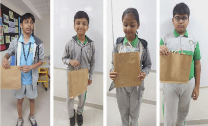
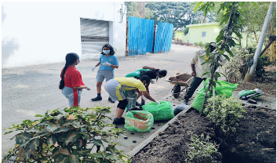
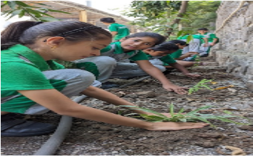

Recent Projects Done By Blissians
Over the years, the students of BLISS have taken part in various eco-friendly projects



---MYP 3 Paper Bag Project---------MYP 1 Compost Making----------PYP Plantation Drive---
--- MYP5 ECO Friendly Urban Planning Models----